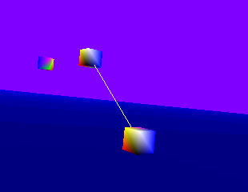
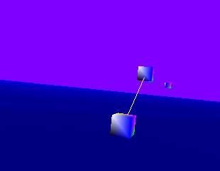

InverseKinematics.h
A simple IK system consisting of two joints, one attached to the xy-plane. The joint is allowed to rotate about the z-axis. A rod is attached to this joint. The other end of the rod, the end effector, is attached to another joint that is allowed to move only in the z-direction. A single goal can be moved in space. The end effector attempts to reach that goal, subject to the joint constraints. The joints and goal are displayed as oriented boxes. The rod is displayed as a line segment.
|  |  |